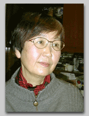

「医療倫理の夜明け」の夜明け
向井承子
いまから七、八年前のこと、私は年老いた両親の介護に追われていました。
『老親とともに生きる』（晶文社）という私自身の本にも書きましたが、先端医療技術が急速に進展する一方で、医療費削減の嵐が吹き荒れる、そんな時代のまっただ中で、私は心身ともにクタクタになっていました。なにしろ、重い病の最中に退院を言い渡されたり、「ご臨終をいつにしましょうか」と尋ねられたり。医療の現場には、答えのない難問が渦巻いていて、それがひとりひとりの当事者に押し寄せてくるのですから。
そんな渦中で出会ったのが、この本でした。患者の立場で参加していた北里大学医学部の倫理委員会で、故川喜田愛郎先生が強くすすめてくれたのでした。すぐれた医学者であり、医史学者でいらした先生ですが、医学部の倫理委員会に迷いこんだような私に、「いまの日本の医療にとって一番大切なことは、あなたのような患者の立場の方が積極的に発言することなのですよ」と、幾度となく励まして下さったのを思い出します。
私は英語の辞書を引き引き、この本に挑戦しました。第二次大戦前後のアメリカで、戦争論理のもとにいかに患者が医学研究の犠牲になってきたのか、公民権運動の時代を経て七〇年代以降に、ふつうの市民が医療にどうかかわるようになったのか、そして、それまでは医師や研究者の専権事項とされてきた医療上の意思決定が、どのようにして法律家や他の非専門家の手にゆだねられるようになったのか、その変化に政治がどのように影響したのか。などのテーマが、歴史家のち密な作業として記述されていてひきこまれました。
どうしても日本の多くの人たちに読んでもらいたいと思って晶文社にご相談したのですが、いま、それが、在宅医療に情熱をかける酒井忠昭先生を中心とするチームの手で翻訳され、日本語で読めるようになったことをとても喜んでいます。
アメリカという極端な社会を評価するのはとても難しいのですが、この本を読んで、感じたのは、日本と比べたときのアメリカ社会の底力というものでした。
この本では、一九六九年のジョンズ・ホプキンズ病院事件や、一九七五年のカレン事件について多くのページがさかれています。前者は、生まれながらの障害児を両親の希望にしたがって「餓死」させたのが、のちにその当事者であった医師により告発された事件です。後者は、植物状態に陥った娘の「死ぬ
権利」を主張する両親とそれを拒否した病院が争った事件です。どちらも、死ぬ
権利、治療停止、生命の質、リビング・ウイルなどさまざまな新しいテーマをめぐって全米に激しい論議を巻き起こし、日本でもよく知られた事件です。
しかし、これまでの、主として法学者や生命倫理学者たちによる伝えられ方とは違って、歴史家ロスマンは、事件をめぐる社会のダイナミズムそのものを教えてくれます。その時期、アメリカには「告発とスキャンダル、論争と怨念」が渦巻いたとロスマンは記していますが、日本との大きな違いは、その激しい論争の跡が記録として残されていることです。そのぼう大な記録が、さらに歴史家の文脈にひきこまれ論じられるのですが、いまさらのように執拗と思えるほどの記録とその公開が、アメリカ社会の基盤となっていることには驚かされます。
本書はその時期のアメリカで特異に発達した医療倫理という方法論のすばらしさと危うさを同時に教えてくれます。医療場面
での至上原理としての自己決定権が確立されていく一方で、医師と患者のあいだでひそやかに成り立っていた医療に「見知らぬ
人々」がどやどやと入り込み、「生と死」が司法や倫理委員会などの合議の場で決められるようになっていく過程こそ、おそらくロスマンがもっとも記したかったことなのでしょう。先端医療技術の登場が生み出した「いつ死なせるか」などという重苦しいテーマを前に医師たちは「道徳上の漂流」に投げ出され、その機に法律家たちと手を組んだ患者が前面
に出てくる。その激しい論争史は、事実上、「だれが医療を支配するのか」という弁護士や裁判所などの法律家と医師とのたたかいだった、とロスマンは記しています。
日本人に無縁のことではありません。私たちもまた、高度に進んだ医療技術とどうかかわるのか、ふつうのくらしを通
して頭を抱える現在です。医療とは、いのちを救い病気の苦しみを癒すための大切な技術として生まれ、それはもちろん、人々に幸せを保障するためのひとつの方法でした。しかし、いまでは、脳死と臓器移植の関係を想像するとわかるように、ひとりの人が生きるためにひとりの人が死ななければならないという、いのちといのちが極端に緊張しあうような人間関係に私たちは投げ出されているのです。私たちはどこまでも個人の欲望の充足を求めてはならないのではないか、と問うこと自体が直ちに、それでは社会にとって生かす意味のある人の方に限られた医療費をまわすべきなのではないか、という現実的な医療費の配分の課題に結びついてしまいます。なんと困難な時代に私たちはおかれているのでしょう。
アメリカでは、医師はもとより、法律家、哲学者、宗教者、ジャーナリスト、そして患者や家族、市民たち、さらに本書に登場するエドワード・ケネディやウオルター・モンデールなどの政治家たちをもふくめて、アメリカ社会が文字通
り血みどろになって、その問題と取り組んできたのです。その白熱した議論の全貌がこの本にはまざまざと再現されています。
いまの日本が受け入れている「舶来」のキーワードは、インフオームド・コンセントにしろ、倫理委員会にしろ、そういう議論の結果
として生み出されたものなのです。日本人はなににつけ外国から知識や方法論をとり入れるのが得意ですが、それには限界があります。ロスマンが教えてくれるのは、新しい科学技術に社会がさらされたときに生ずる痛み、矛盾の歴史です。それを知った上で、では、日本ではどうしたらよいのか、日本の社会に根ざす方法を考えていかなければならない時期に来ていると私は思います。そうしなければ、脳死臓器移植を初め、遺伝子治療やクローン技術など、次々に押し寄せてくる先端医療技術にたいして、日本の社会は対応できないで流されてしまうでしょう。
今日本は『医療倫理の夜明け』の夜明けにあると思います。この本が読まなければならない理由がそこにあります。
向井承子（むかい・しょうこ）
1939年東京生まれ。北海道大学法学部卒業。ノンフィクション・ライター。著書に『女たちの同窓会』、『小児病棟の子どもだち』、『がんばれ風太』、『漂流する家族』『お母さんの仕事お父さんの仕事』『看護婦の現場から』など多数。
